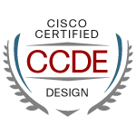
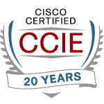

Episode第 1 集10:04
Cisco IOS XR · uSID f3216 · 24 episodes24 集
SRv6 Deep DiveSRv6 深度學習


Quintus Zhu · CCDE #20240069 · CCIE #15189 (R&S, SP, Wireless)This is a set of in-depth SRv6 experiments. This page records the process of each experiment, and uses AI to make the experiments into videos.這是一組 SRv6 的深度學習實驗，這裡記錄了每個實驗的過程，並且用 AI 製作成影片。
24episodes集
4h 42mof video影片
2slide decks份簡報檔
About these experiments關於這些實驗
This is a real test of SRv6 on a lab network, not only from books.這是在 lab 上真實測試 SRv6，並非只看書本。
Each experiment: first a question, then a test, and last the answer.每一個實驗：先帶入問題，接著測試，最後得到答案。
You can repeat the experiments in your own lab. The slides and the text version record the detailed process: the commands, the device configurations, and the outputs of the experiments.你可以在自己的 lab 上重現，簡報檔及圖文版記錄詳細過程，包括指令、設備設定檔，及實驗得到的輸出。
You need basic knowledge of IPv6, IS-IS, BGP, and MPLS VPN.需要你具備 IPv6、IS-IS、BGP、MPLS VPN 等基本知識。
Slides簡報檔PDF
This is the slide deck of the experiments.這是實驗內容的簡報。
Experiment record in text圖文版實驗記錄
The text version records the experiment process, with many screenshots of the experiments, and the commands, the outputs, and the readings of each experiment step.圖文記錄實驗過程，包括大量實驗的截圖，以及每個實驗步驟的指令、輸出及判讀。
Lab files實驗檔案
CML lab file: 6 routers + 2 hosts.CML 實驗檔：Router x 6 + Host x 2。
ZIP · 13 KB CML lab fileCML 實驗檔 README說明
The routers use a custom XRd vRouter image in CML. The build scripts and the installation guide are on GitHub.路由器使用 CML 裡的自訂 XRd vRouter 映像檔。建置腳本與安裝說明放在 GitHub。
Videos影片
The YouTube playlist of 24 experiment videos.24 支實驗講解影片的 YouTube 播放清單。
Choose a male or a female machine voice. Subtitles are in English and Chinese.有男聲或女聲機器語音，中英雙語字幕。
Open the YouTube playlist開啟 YouTube 播放清單
Foundations基礎Episodes 1–3第 1–3 集
Episode第 2 集13:33
Build the Lab建立實驗環境
Episode第 3 集16:01
SIDs, Locators and the Two LookupsSID、locator 與兩次查表
Data plane資料平面Episodes 4–7第 4–7 集
Episode第 4 集14:33
Endpoint Behaviors and FlavorsEndpoint behavior 與 flavor
Episode第 5 集12:33
How a uSID Container ShiftsuSID 容器如何移位
Episode第 6 集12:19
SRH and Encapsulation SizeSegment Routing 標頭與封裝大小
Episode第 7 集14:19
MTU, Fragmentation and ICMPMTU、分片與 ICMP
Underlay底層網路Episodes 8–11第 8–11 集
Episode第 8 集11:54
IS-IS from LSP to CEFIS-IS，從 LSP 到 CEF
Episode第 9 集11:48
TI-LFATI-LFA，拓撲無關的無環備援
Episode第 10 集10:32
Microloops, BFD, and What a Virtual Lab Cannot Time微環路、BFD，以及虛擬實驗無法計時的事
Episode第 11 集11:30
Flex-Algo彈性演算法，Flex-Algo
Services服務Episodes 12–16第 12–16 集
Episode第 12 集10:24
L3VPN, Build BLUE and RED三層 VPN，建立 BLUE 和 RED
Episode第 13 集12:15
L3VPN, the Resolution Chain三層 VPN，解析鏈
Episode第 14 集14:04
EVPN, a Layer 2 ServiceEVPN，SRv6 上的二層服務
Episode第 15 集11:42
SR Policy and Binding SIDSR Policy 與 Binding SID
Episode第 16 集11:23
On-Demand Next Hop Needs a PCEOn-demand next hop 需要 PCE
Operations維運Episodes 17–19第 17–19 集
Episode第 17 集10:17
A Method, and SRv6 OAM一套方法，以及 SRv6 OAM
Episode第 18 集12:24
Four Faults, Live四個故障，現場排除
Episode第 19 集11:23
The Security Boundary, and Scale安全邊界，以及規模
Migration and capstone遷移與結業Episodes 20–24第 20–24 集
Episode第 20 集11:42
From LDP and MPLS VPN to SRv6從 LDP 與 MPLS VPN 遷移到 SRv6
Episode第 21 集7:26
From SR-MPLS to SRv6從 SR-MPLS 遷移到 SRv6
Episode第 22 集7:32
From OSPF to IS-IS從 OSPF 遷移到 IS-IS
Episode第 23 集10:48
What Changes on Hardware換成硬體時會有什麼改變
Episode第 24 集11:40